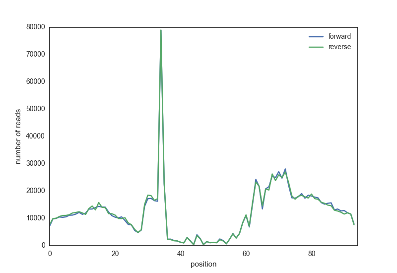

14. Creating a DNAseI footprint profile¶
Note
This exercise is optional!
14.1. Description¶
The exercise for this week is to write a script that plots the cumulative footprint signal in motif sequences. The script is given two input filenames as arguments on the command line:
motif locations in BED format;
DNAseI sequencing data in indexed BAM format.
The script needs to find all reads overlapping the motif region, extended with a certain length, and take the start position of the reads. It will plot all read start positions, the DNAseI cutting sites, averaged over all motif locations. The result should look something like this:

14.1.1. Data¶
The motif matches for three transcription factors in DNAseI hotspots are located in /scratch/cfb/footprints/:
/scratch/cfb/footprints/CTCF_motifs.bed/scratch/cfb/footprints/NRF1_motifs.bed/scratch/cfb/footprints/REST_motifs.bed
We have DNAseI sequencing data in BAM format for two different tissues (fetal heart and brain):
/scratch/cfb/regmod/dnase/bam/UW.Fetal_Brain.ChromatinAccessibility.merged.bam/scratch/cfb/regmod/dnase/bam/UW.Fetal_Heart.ChromatinAccessibility.merged.bam
14.1.2. Reading BAM files¶
To read BAM files, you will use the Python pysam module,
see the documentation here.
Let’s say you have a BAM (indexed!) file called example.bam.
Here is how to open it with pysam:
import pysam
samfile = pysam.AlignmentFile("example.bam", "rb")
You can now retrieve reads mapping to a specific location with the fetch method,
which returns an iterator.
for read in samfile.fetch("chr6", 170862000, 170862010):
print(read.qname, read.reference_name, read.reference_start)
SOLEXA-1GA-1:7:72:651:1250#0 chr6 170861983
SOLEXA-1GA-1:2:66:175:1257#0 chr6 170861983
SOLEXA-1GA-1:4:11:575:1503#0 chr6 170861983
SOLEXA-1GA-2:2:95:69:974#0 chr6 170861991
SOLEXA-1GA-2_2_FC30DG6::5:100:373:1401 chr6 170861993
SOLEXA-1GA-1:2:3:22:793:1306 chr6 170861994
SOLEXA-1GA-2_2_FC30DG6::3:85:1736:96 chr6 170861997
SOLEXA-1GA-2_2_FC30DG6::6:45:1406:1983 chr6 170862000
SOLEXA-1GA-2_2_FC30DG6::5:28:437:474 chr6 170862001
SOLEXA-1GA-1:4:2:416:1943#0 chr6 170862002
SOLEXA-1GA-1:2:5:2:293:1943 chr6 170862006
SOLEXA-1GA-1:2:2:40:1247:887 chr6 170862007
SOLEXA-1GA-2:5:1:790:886#0 chr6 170862008
See the attributes of the read, an AlignedSegment object, here.
14.1.3. Creating the profile¶
You can use a list to store the profile.
profile = [0] * 10
profile[1] += 1
profile[8] += 2
for i in range(4,8):
profile[i] += 3
print(profile)
[0, 1, 0, 0, 3, 3, 3, 3, 2, 0]
14.1.4. Plotting¶
Here is an example how to make a line plot using pandas:
# This line is only necessary in Jupyter notebook, not in a script
%matplotlib inline
import pandas as pd
import matplotlib.pyplot as plt
import seaborn as sns
import numpy as np
sns.set_style('white') # I like this better
df = pd.DataFrame({"a": range(10), "b": np.random.rand(10)})
# plot using pandas
df.plot(title="example")
# customize plot
plt.xlabel("x label")
plt.ylabel("y label")
# save figure as png (many other formats also possible)
plt.savefig("myplot.png")
Matplotlib is building the font cache; this may take a moment.
14.1.5. Approach¶
Keep the following things in mind:
Think about the problem first, before starting to program.
Write out the logic of the problem.
Start out small.
Think of test sets and create them.
The BAM files are big! Testing your script on a complete dataset will take too much time. Don’t copy the whole file to your own directory! Create a small test file with few motifs to develop and test your script. What would be a reasonably number? 1? 2? 10? 100? 1000?
The score of the motif match (higher means a better match) is represented in the 5th column of the BED file.
14.1.5.1. Tricky issues:¶
Motif orientation. A motif can be located on the forward or reverse strand (column 6 in the BED file). Start with only forward motifs, and once that works, add the reverse motifs.
Read orientation. The start position of the reverse reads is not represented in the
posattribute. Start with only the reads mapped to the forward strand.
14.1.6. Testing¶
You can use CTCF and/or NRF1 data to test your script and compare your result to published examples. See Fig. 5 of Boyle et al. 2012 for CTCF and Fig. 3 of Neph et al. 2012 for NRF1.
14.1.7. Final exercise¶
Create the footprint profile of REST (RE1-Silencing Transcription factor), also known as Neuron-Restrictive Silencer Factor (NRSF), in both heart and brain fetal tissues. Compare the resuls and check the literature for REST function. Can you explain the result?